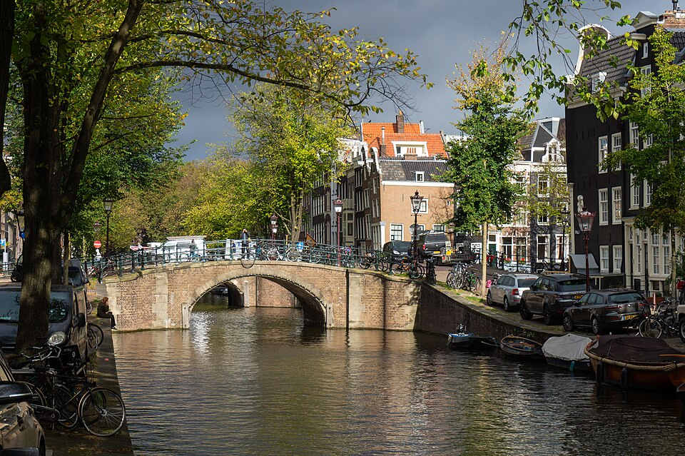

Olá, meu nome é Gustavo, tenho 28 anos e moro em Governador Valadares, Minas Gerais. Atualmente trabalho como Auxiliar Administrativo e sou estudante de Análise e Desenvolvimento de Sistemas. Antes de migrar para a área do TI, cursei alguns períodos de Administração pela UFJF GV, não era exatamente o que eu queria, digamos que, foi o que deu para passar com a minha nota do Enem, e por motivos pessoais e também da pandemia, tive que abrir mão de ter dado continuidade no curso, e apesar de ter caído de paraquedas na administração, não descartei a possibilidade, de um dia ser um graduação pro futuro, comecei a achar interessante a área depois que fui conhecendo ela nesse curto período em que estudei. Através de um amigo, conheci a programação, e conversando com ele, pesquisando muito e por muito tempo e fazendo alguns cursinhos na área para me familiarizar e conhecer mais, que atualmente continuo esse cursinho para servir de complemento à graduação, decidi que era isso que eu queria fazer, e me matriculei na Uninter. Tenho um interesse em tecnologia desde pequeno, desde montar um computador de mesa, até formatar esse computador de mesa, mas não tive a oportunidade de fazer um curso de informática, que era uma vontade imensa, tudo que sei, aprendi sozinho, pesquisando e tentando até dar certo, por isso me familiarizei pelas vertentes do TI. Atualmente penso em ser Full Stack, talvez seja só a cabeça de quem está começando, mas espero aprender muito e ser um bom programador no futuro.
Confie no seu processo, nunca é tarde demais para começar, você consegue!
| Holanda |  |
| Austrália |
|
| Japão |
|